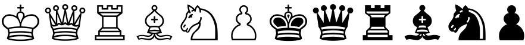
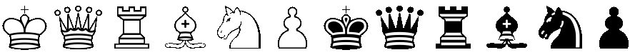
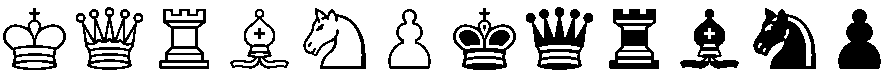

| Simple black outline on white background: |
|  |
| Attempt to erase the white background on anti-aliased image (note artifacts): |
|  |
| Black and white (no anti-aliasing), erase the background: |
|  |
| Erase the black, leaving only white (no anti-aliasing): |
| Create anti-aliased black outline on transparent background: |
| Create a composite of the last two images to make the final version: |